Code
data <- read_excel("data/results_survey.xlsx")
data <- data[1:121] %>%
filter(.[[18]] !='Yes', .[[20]] < 80) # not analysed any EEG methodHere we assess how proficiency in EEG affects researcher’s awareness, preferences and choices.
data <- read_excel("data/results_survey.xlsx")
data <- data[1:121] %>%
filter(.[[18]] !='Yes', .[[20]] < 80) # not analysed any EEG methodm = FAMD(exp_data[1:5], ncp=2, axes=c(1,2))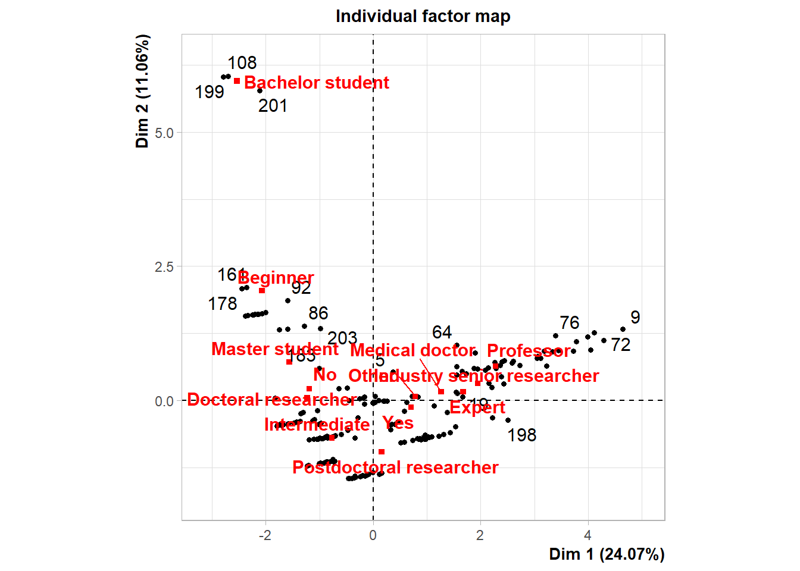
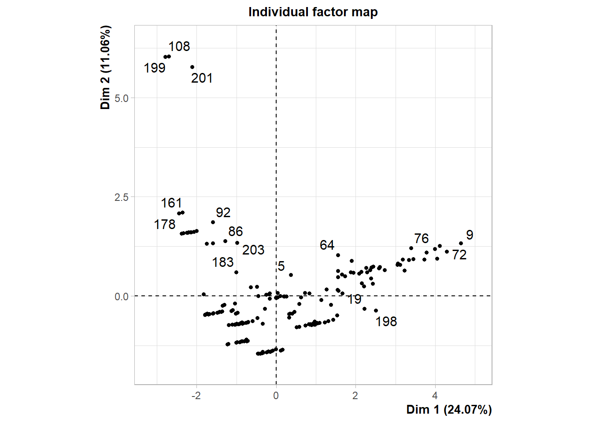
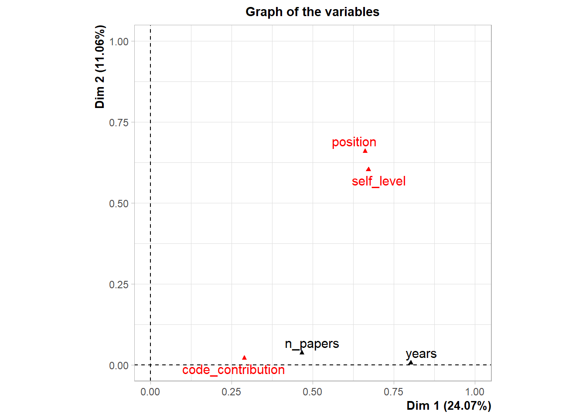
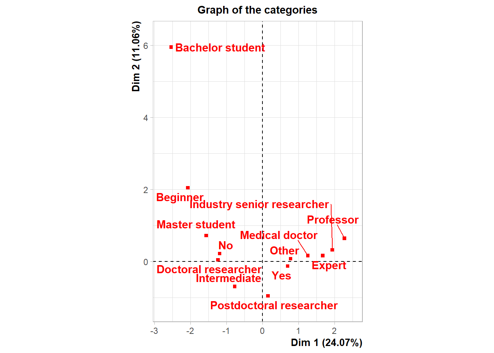
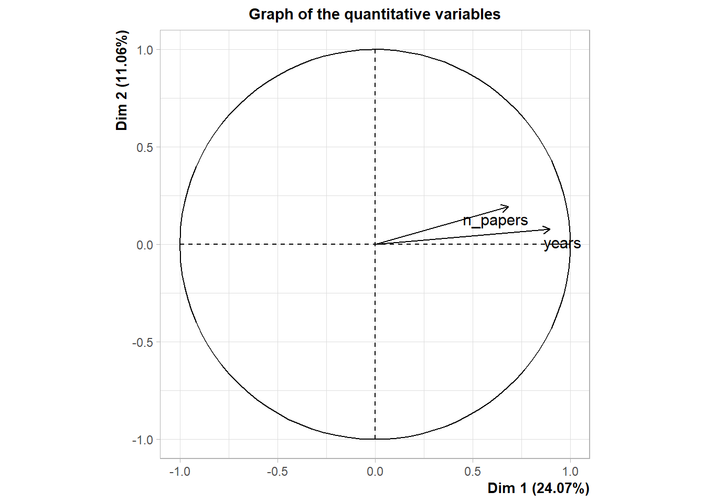
# pics <- fviz_famd_ind(m, col.ind = "cos2",
# gradient.cols = c("#00AFBB", "#E7B800", "#FC4E07"),
# repel = TRUE)Proxy Proficiency should definitely correlate with years of experience
factor_scores <- as.data.frame(m$ind$coord)
head(factor_scores) Dim.1 Dim.2
1 -1.3787967 -0.4011946
2 -1.1019372 -0.7171748
3 -0.2238351 -1.4057025
4 0.5125602 -0.7813393
5 0.3645902 0.5355694
6 1.3044242 -0.6310768cbind(data[20], factor_scores[1]) %>%
rename_at(vars(colnames(.)), ~ c("years", "proxy")) %>%
with(cor.test( proxy, years)) %>%
broom::tidy() %>% dplyr::select(estimate, p.value)# A tibble: 1 × 2
estimate p.value
<dbl> <dbl>
1 0.895 5.52e-75vec <- names(data[25:50]) %>% str_split_i(., "\\? \\[", 2) %>% str_sub(., 1, -2)
cor_fun <- function(df) cor.test(df$proxy, df$score, method = "spearman") %>% tidy()
n_soft <- data[25:50] %>%
rename_at(vars(colnames(.)), ~ vec) %>%
mutate_at(vars(vec), function(., na.rm = FALSE) (x = ifelse(.=="Yes", 1, 0)))%>%
rowSums() %>% tibble()
cbind(factor_scores[1], data[23]) %>% cbind(., data[24]) %>% cbind(., n_soft) %>%
rename_at(vars(colnames(.)), ~ c("proxy", "measure", "analyse", "n_soft")) %>%
dplyr::filter(analyse < 500) %>% tibble() %>%
mutate(rate = analyse / measure) %>%
dplyr::select(-analyse, -measure) %>%
gather(type, score, rate:n_soft) %>%
dplyr::group_by(., type) %>% nest() %>%
dplyr::mutate(., model = map(data, cor_fun)) %>% unnest() %>%
dplyr::select(type, estimate, p.value, method) %>%
dplyr::group_by(type) %>% slice(1) %>% mutate(p.value = round(as.numeric(p.value), 3),
estimate = round(as.numeric(estimate), 3)) %>%
mutate(p.value = cell_spec(p.value, bold = ifelse(p.value < 0.05, TRUE, FALSE))) %>%
mutate(type = case_when(
type == "n_soft" ~ "Number of softwares used",
type == "rate" ~ "Rate of electrodes recorded to analysed"
)) %>%
kable(escape = F, booktabs = T) %>%
kable_minimal(full_width = F, html_font = "Source Sans Pro")| type | estimate | p.value | method |
|---|---|---|---|
| Number of softwares used | 0.307 | 0 | Spearman's rank correlation rho |
| Rate of electrodes recorded to analysed | 0.262 | 0 | Spearman's rank correlation rho |
8 features used importanta for visualisation.
feature <- data[52:60] %>% rename_all(., ~str_split_i(colnames(data[52:60]), "\\? \\[", 2) %>% str_sub(., 1, -2) ) %>%
mutate_at(c(colnames(.)),
funs(recode(.,
"Very important"= 2, "Important"= 1, "Neutral"= 0,
"Low importance"= -1, "Not at all important" = -2 ))) %>%
cbind(., factor_scores[1]) %>%
rename_at(vars(colnames(.)), ~ c("subplot", "attributes", "speed", "publicable", "reproducable", "zooming", "interactive", "gui", "coding", "proxy"))
feature %>%
gather(type, score, subplot:coding) %>%
dplyr::group_by(., type) %>% nest() %>%
dplyr::mutate(., model = map(data, cor_fun)) %>% unnest() %>%
dplyr::select(type, estimate, p.value) %>%
dplyr::group_by(type) %>% slice(1) %>% mutate(p.value = round(as.numeric(p.value), 3),
estimate = round(as.numeric(estimate), 3)) %>%
mutate(p.value = cell_spec(p.value, bold = ifelse(p.value < 0.05, TRUE, FALSE))) %>%
dplyr::rename(`Software feature` = type) %>%
kable(escape = F, booktabs = T) %>%
kable_minimal(full_width = F, html_font = "Source Sans Pro")| Software feature | estimate | p.value |
|---|---|---|
| attributes | -0.069 | 0.32 |
| coding | 0.174 | 0.013 |
| gui | -0.126 | 0.071 |
| interactive | -0.066 | 0.342 |
| publicable | -0.111 | 0.111 |
| reproducable | 0.069 | 0.333 |
| speed | 0.016 | 0.821 |
| subplot | 0.122 | 0.082 |
| zooming | -0.007 | 0.919 |
log_fun <- function(df) glm(df$score ~ df$proxy, family = "binomial") %>% tidy() %>% slice(-1)
cbind(factor_scores[1], data[79]) %>% cbind(., data[117]) %>%
cbind(., data[118]) %>%
rename_at(vars(colnames(.)), ~ c("proxy", "ud", "jet_aware", "twod_aware")) %>%
mutate(ud = ifelse(ud=="Up", 1, 0),
jet_aware = ifelse(jet_aware =="Yes", 1, 0),
twod_aware = ifelse(twod_aware =="Yes", 1, 0)) %>%
gather(type, score, ud:twod_aware) %>%
dplyr::group_by(., type) %>% nest() %>%
dplyr::mutate(., model = map(data, log_fun)) %>% unnest() %>%
dplyr::select(type, estimate, std.error, p.value) %>%
dplyr::group_by(type) %>% slice(1) %>% mutate(p.value = round(as.numeric(p.value), 3),
estimate = round(as.numeric(estimate), 3),
std.error = round(as.numeric(std.error), 3)) %>%
mutate(p.value = cell_spec(p.value, bold = ifelse(p.value < 0.05, TRUE, FALSE))) %>%
mutate(type = case_when(
type == "ud" ~ "Polaritiy convention: up",
type == "jet_aware" ~ "Awareness about colorbar perceptual controvercies: yes",
type == "twod_aware" ~ "Awareness about 2D colobars: yes"
)) %>%
dplyr::rename(`Visualisation customs` = type) %>%
kable(escape = F, booktabs = T) %>%
kable_minimal(full_width = F, html_font = "Source Sans Pro")| Visualisation customs | estimate | std.error | p.value |
|---|---|---|---|
| Awareness about colorbar perceptual controvercies: yes | 0.335 | 0.095 | 0 |
| Awareness about 2D colobars: yes | 0.112 | 0.090 | 0.213 |
| Polaritiy convention: up | -0.022 | 0.111 | 0.843 |
vec <- names(data[25:51]) %>% str_split_i(., "\\? \\[", 2) %>% str_sub(., 1, -2)
data[25:51] %>%
rename_at(vars(colnames(.)), ~ vec) %>%
dplyr::select(-Other) %>%
mutate_at(vars(vec[1:26]), function(., na.rm = FALSE) (x = ifelse(.=="Yes", 1, 0))) %>% select_if(colSums(.) > 10) %>%
cbind(factor_scores[1], .) %>% dplyr::rename(proxy = !!names(.)[1]) %>%
gather(type, score, BESA:`Custom scripts`) %>%
dplyr::group_by(., type) %>% nest() %>%
dplyr::mutate(., model = map(data, log_fun)) %>% unnest() %>%
dplyr::select(type, estimate, std.error, p.value) %>%
dplyr::group_by(type) %>% slice(1) %>% mutate(p.value = round(as.numeric(p.value), 3),
estimate = round(as.numeric(estimate), 3),
std.error = round(as.numeric(std.error), 3)) %>%
mutate(p.value = cell_spec(p.value, bold = ifelse(p.value < 0.05, TRUE, FALSE))) %>%
dplyr::rename(`Analytical software` = type) %>%
kable(escape = F, booktabs = T) %>%
kable_minimal(full_width = F, html_font = "Source Sans Pro")| Analytical software | estimate | std.error | p.value |
|---|---|---|---|
| BESA | 0.178 | 0.157 | 0.258 |
| Brain Vision Analyser | 0.024 | 0.097 | 0.806 |
| Brainstorm | 0.145 | 0.105 | 0.165 |
| Custom scripts | 0.128 | 0.084 | 0.125 |
| EEGLAB | 0.255 | 0.092 | 0.006 |
| ERPLAB | 0.195 | 0.096 | 0.042 |
| FieldTrip | 0.190 | 0.084 | 0.023 |
| LIMO | 0.336 | 0.145 | 0.021 |
| MNE-Python | -0.054 | 0.083 | 0.519 |
| SPM | 0.089 | 0.140 | 0.525 |
| Unfold | 0.082 | 0.162 | 0.612 |
cbind(factor_scores[1], data[31]) %>%
rename_at(vars(colnames(.)), ~ c("proxy", "EEGLAB")) %>%
mutate(EEGLAB = ifelse(EEGLAB =="Yes", 1, 0)) %>%
ggplot(., aes(x=as.factor(EEGLAB), y = proxy)) +
geom_boxplot() + labs(x = "EEGLAB", y = "Experience") +
theme_classic()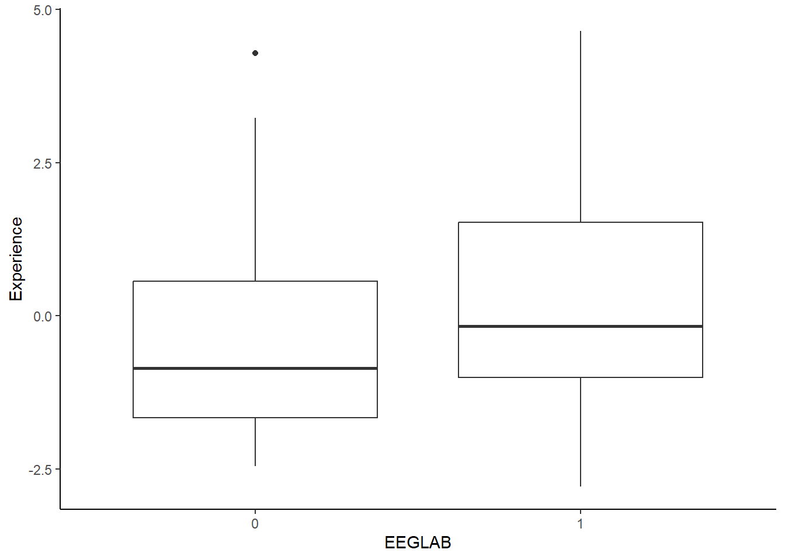
cbind(factor_scores[1], data[35]) %>%
rename_at(vars(colnames(.)), ~ c("proxy", "ERPLAB")) %>%
mutate(ERPLAB = ifelse(ERPLAB =="Yes", 1, 0)) %>%
ggplot(., aes(x=as.factor(ERPLAB), y = proxy)) +
geom_boxplot() + labs(x = "ERPLAB", y = "Experience") +
theme_classic()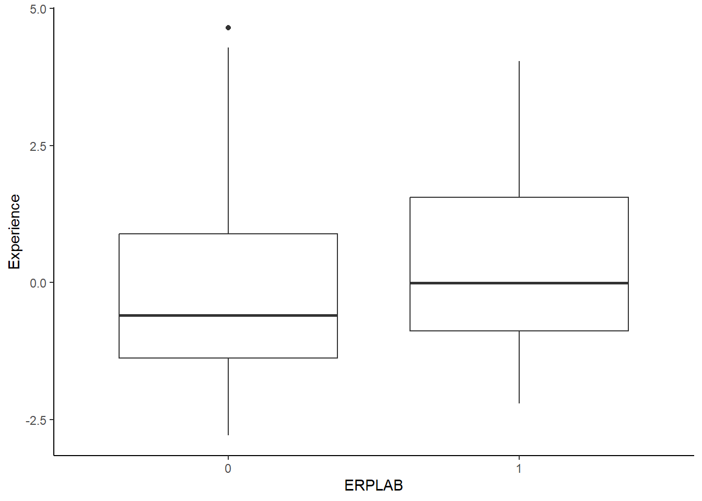
cbind(factor_scores[1], data[41]) %>%
rename_at(vars(colnames(.)), ~ c("proxy", "Fieldtrip")) %>%
mutate(Fieldtrip = ifelse(Fieldtrip =="Yes", 1, 0)) %>%
ggplot(., aes(x=as.factor(Fieldtrip), y = proxy)) +
geom_boxplot() + labs(x = "Fieldtrip", y = "Experience") +
theme_classic()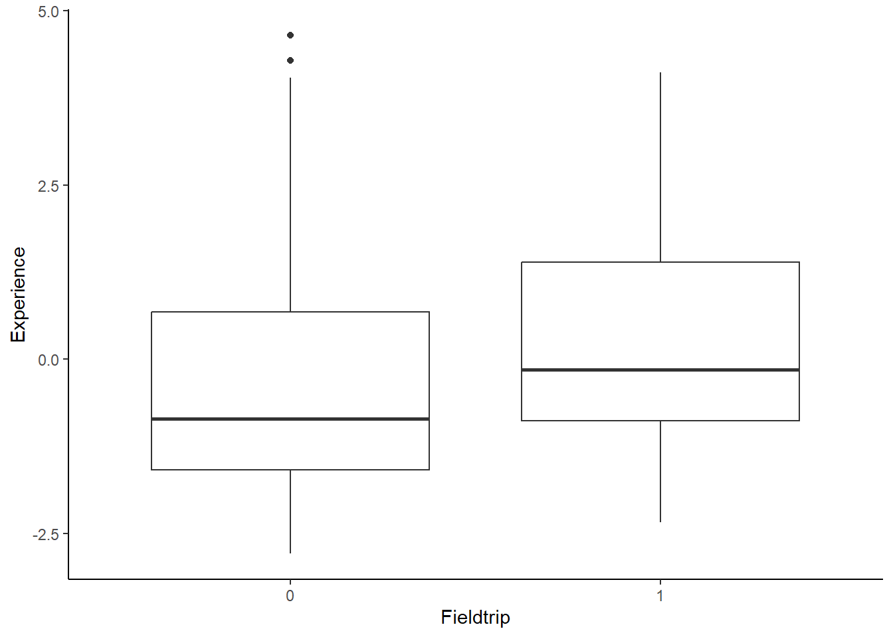
cbind(factor_scores[1], data[43]) %>%
rename_at(vars(colnames(.)), ~ c("proxy", "LIMO")) %>%
mutate(LIMO = ifelse(LIMO =="Yes", 1, 0)) %>%
ggplot(., aes(x=as.factor(LIMO), y = proxy)) +
geom_boxplot() + labs(x = "LIMO", y = "Experience") +
theme_classic()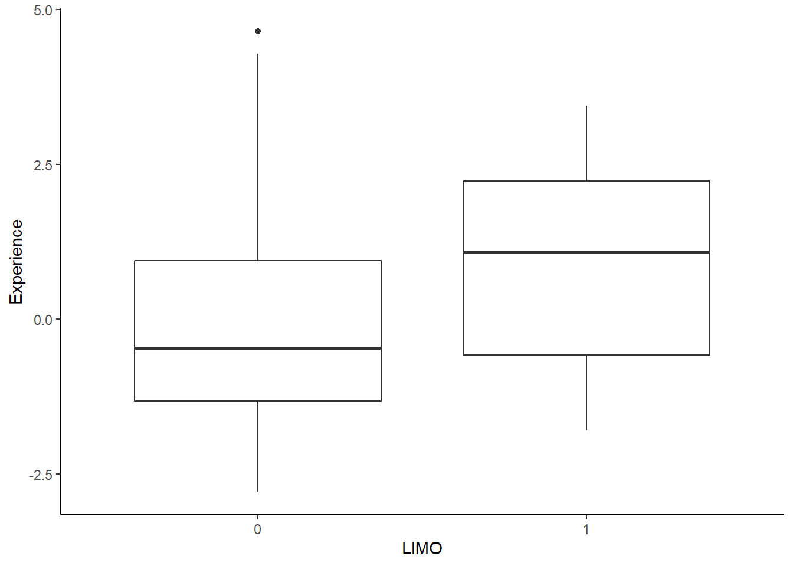
vec <- names(data[25:50]) %>% str_split_i(., "\\? \\[", 2) %>% str_sub(., 1, -2)
software <- data[25:50] %>%
rename_at(vars(colnames(.)), ~ vec) %>%
mutate_at(vars(vec), function(., na.rm = FALSE) (x = ifelse(.=="Yes", 1, 0))) %>% rowSums() %>% tibble()cbind(data.frame(rowSums(software)), factor_scores[1]) %>%
rename_at(vars(colnames(.)), ~ c("n_soft", "experience")) %>%
filter(n_soft > 0) %>%
ggplot(., aes(x=n_soft, y=experience)) + geom_jitter() + geom_smooth()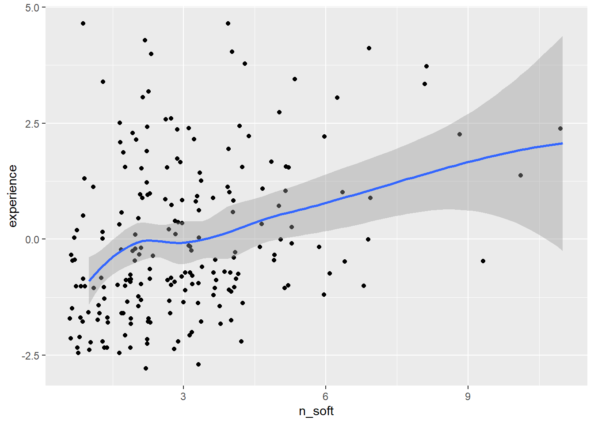
cbind(data.frame(rowSums(software)), factor_scores[1]) %>%
rename_at(vars(colnames(.)), ~ c("n_soft", "experience")) %>%
filter(n_soft > 0) %>%
lm(data=., n_soft ~ experience) %>% summary(.)
Call:
lm(formula = n_soft ~ experience, data = .)
Residuals:
Min 1Q Median 3Q Max
-3.6473 -1.2372 -0.3383 0.9372 7.1416
Coefficients:
Estimate Std. Error t value Pr(>|t|)
(Intercept) 3.02985 0.11864 25.539 < 2e-16 ***
experience 0.34813 0.07065 4.927 1.71e-06 ***
---
Signif. codes: 0 '***' 0.001 '**' 0.01 '*' 0.05 '.' 0.1 ' ' 1
Residual standard error: 1.711 on 206 degrees of freedom
Multiple R-squared: 0.1054, Adjusted R-squared: 0.1011
F-statistic: 24.28 on 1 and 206 DF, p-value: 1.709e-06data %>% select(23, 24) %>%
cbind(., factor_scores[1]) %>%
rename_at(vars(colnames(.)), ~ c("measure", "analyse", "experience")) %>%
filter(analyse < 500) %>%
mutate(rate = analyse / measure) %>%
ggplot(., aes(x=rate, y=experience)) +
geom_point() +
stat_smooth(method = "lm",
formula = y ~ x,
geom = "smooth") +
labs(x ="analyse / measure") +
theme_classic()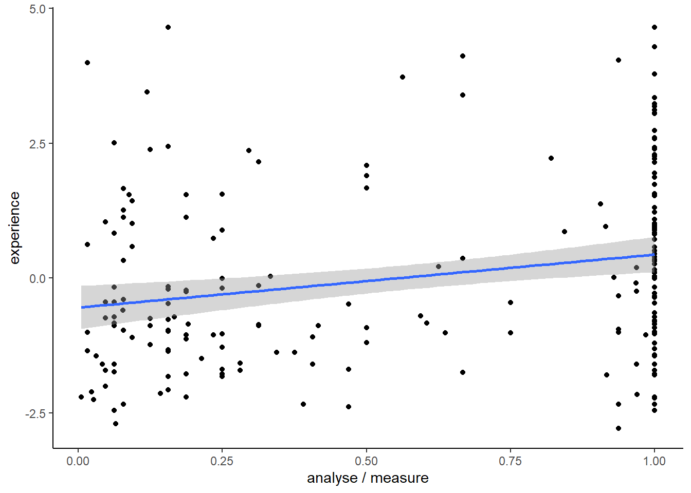
data %>% select(23, 24) %>%
cbind(., factor_scores[1]) %>%
rename_at(vars(colnames(.)), ~ c("measure", "analyse", "experience")) %>%
filter(analyse < 500) %>%
mutate(rate = analyse / measure) %>%
lm(rate ~ experience, .) %>% summary()
Call:
lm(formula = rate ~ experience, data = .)
Residuals:
Min 1Q Median 3Q Max
-0.7854 -0.3809 0.0336 0.3843 0.5565
Coefficients:
Estimate Std. Error t value Pr(>|t|)
(Intercept) 0.57967 0.02740 21.156 < 2e-16 ***
experience 0.05554 0.01615 3.439 0.000708 ***
---
Signif. codes: 0 '***' 0.001 '**' 0.01 '*' 0.05 '.' 0.1 ' ' 1
Residual standard error: 0.3942 on 205 degrees of freedom
Multiple R-squared: 0.05454, Adjusted R-squared: 0.04992
F-statistic: 11.82 on 1 and 205 DF, p-value: 0.0007079n_soft <- data[25:50] %>%
rename_at(vars(colnames(.)), ~ vec) %>%
mutate_at(vars(vec), function(., na.rm = FALSE) (x = ifelse(.=="Yes", 1, 0))) %>% rowSums() %>% tibble()
cbind(n_soft, factor_scores[1]) %>%
rename_at(vars(colnames(.)), ~ c("n_soft", "experience")) %>%
ggplot(., aes(x=n_soft, y=experience)) +
geom_point() +
stat_smooth(method = "lm",
formula = y ~ x,
geom = "smooth") +
labs(x ="n_soft") +
theme_classic()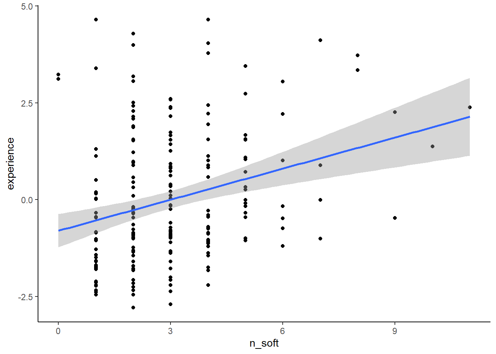
cbind(factor_scores[1], data[117]) %>%
rename_at(vars(colnames(.)), ~ c("proxy", "jet_aware")) %>%
mutate(jet_aware = ifelse(jet_aware =="Yes", 1, 0)) %>%
ggplot(., aes(x=as.factor(jet_aware), y = proxy)) +
geom_boxplot() + labs(x = "Aware or not abour colorbar controvercies", y = "Experience") +
theme_classic()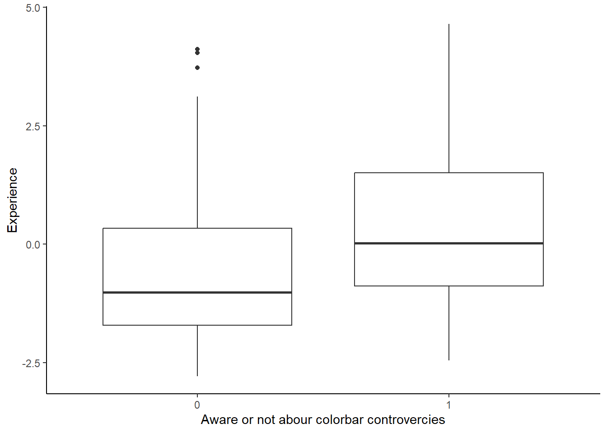